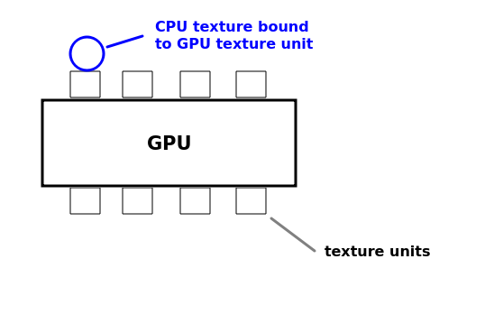

A texture is a raster (bitmap) image which is overlaid on a 3D shape in OpenGL and other 3D graphics APIs. Textures are typically used to apply realistic surfaces to 3D models and shapes, for example a brick texture can be overlaid on a wall, or a metallic texture could be overlaid on a robot model. Textures can be a range of formats including PNG: in a typical application we would load the texture from file and apply it to a model or 3D shape in our OpenGL world. In this module, however, we are going to particularly focus on how textures can be used in an augmented reality (AR) application, to show the camera feed within an OpenGL scene.
The following classes are key to an OpenGL AR application:
SurfaceTexture. This is an object representing the actual texture obtained from the camera feed. You create it in your OpenGL code and setup CameraX to stream the camera feed to it.We first need to create a texture, then bind it to an on-GPU texture unit (see below) and, if we want to stream the camera feed into the texture, create a SurfaceTexture (also see below).
In our OpenGL renderer, we need to create a texture.
We use OpenGLUtils.genTexture() to do this. This typically goes in the onSurfaceCreated():
val textureId = OpenGLUtils.genTexture()What this is doing is generating a texture ID. A texture ID is a unique ID number representing a particular texture. Before we use it further, we have to check it's not zero; if
OpenGLUtils.genTexture() returns zero, it means it failed to generate the texture successfully.
The next step is to bind the texture to a specific on-GPU texture unit. A texture unit, of which more than one is available, is a specific piece of hardware which deals with processing textures. The diagram illustrates this:

We can do this with OpenGLUtils.bindTextureToTextureUnit() as shown below. This code is also in onSurfaceCreated().
if (textureId != 0) {
OpenGLUtils.bindTextureToTextureUnit(textureId, GLES20.GL_TEXTURE0, OpenGLUtils.GL_TEXTURE_EXTERNAL_OES)
// further code continues here...
}
Note the GL_TEXTURE0 refers to the first on-GPU texture unit (ref: here). Note that the texture unit - a piece of GPU hardware for processing textures - is different to the texture ID which is a CPU (Kotlin) based value representing the texture. There are multiple texture units available, GL_TEXTURE1 is the second, GL_TEXTURE2 is the third, etc.
The final argument is the texture type. Normally this will be GLES20.GL_TEXTURE_2D (e.g. if we are loading a texture from a file) but in the case of the camera feed, the format is a bit different so we have to use OpenGLUtils.GL_TEXTURE_EXTERNAL_OES).
Once we've created a texture and bound it to a texture unit, we then need to create a SurfaceTexture object, using the texture ID. This allows us to stream the camera feed into the texture.
surfaceTexture = SurfaceTexture(textureId)
Once we have initialised a texture, we need to specify how it will be applied to a shape.This is done on the GPU using shaders, as described below.
Textures are defined using so-called S and T coordinates. A texture is a 2D raster/bitmap image which is overlaid on a 3D shape. The S coordinate of the texture represents its horizontal axis, and the T coordinate represents its vertical axis. The coordinates range from 0 to 1. S=0, T=0 represents the bottom left. So:
x and y coordinates to s and t coordinates:
S coordinate = (X coordinate+1) / 2 T coordinate = (Y coordinate+1) / 2For example, for the vertex (-1, -1, 0):
S coordinate = 0/2 = 0 T coordinate = 0/2 = 0and for the vertex (1, 1, 0):
S coordinate = 2/2 = 1 T coordinate = 2/2 = 1
This is shown in the diagram below.
attribute vec4 aVertex;
varying vec2 vTextureValue;
void main (void)
{
gl_Position = aVertex;
vTextureValue = vec2(0.5*(1.0 + aVertex.x), 0.5*(1.0 + aVertex.y));
}
then the fragment shader:
#extension GL_OES_EGL_image_external: require
precision mediump float;
varying vec2 vTextureValue;
uniform samplerExternalOES uTexture;
void main(void)
{
gl_FragColor = texture2D(uTexture,vTextureValue);
}
Note how this shader is taking in the vertices as an attribute variable (as before) - this would store the current vertex of the shape we're drawing. Also note the:
varying vec2 vTextureValue;This represents the S and T coordinates of the texture that we want to map the current vertex to. It is a varying variable: as we have seen, varying variables are used to pass information from the vertex to the fragment shader. So in the vertex shader we set the eye coordinate position to the vertex (assuming no view/projection transform) and then do the maths (as shown above) to calculate the texture coordinate from the vertex coordinates.
Then in the fragment shader we set the gl_FragColor to a colour taken from the texture. Note the uniform variable uTexture, of the slightly cryptic type samplerExternalOES, represents the actual texture itself. A sampler is an object which samples pixels from the texture and projects them onto the shape we're drawing. We use the texture2D function to pull the correct drawing colour at the current S and T coordinate (which we calculated from the vertex position in the vertex shader) from the texture image.
We need to link texture unit 0 (see above) to the shader variable representing the texture, uTexture:
val refTextureUnit = gpuTexture.glGetUniformLocation("uTexture")
gpuTexture.setUniformInt(refTextureUnit, 0)
gpuTexture is a GPUInterface object representing the texture shaders. This code (which should come at the end of onSurfaceCreated()) is similar to what you have seen before: we first get a reference to the shader variable, and then set it to 0, for GPU texture unit 0. This will associate GPU texture unit 0 with the uTexture shader variable.
We have considered how to create textures in general, but we have not yet looked at how to link textures to the camera. Our aim is to stream the camera feed (obtained using CameraX) into our texture. To do this we make use of a SurfaceTexture object. SurfaceTextures are used for this purpose: to stream graphics into an OpenGL texture.
The relation between the different components of the system are shown below:
We create the surface texture from our texture ID:
cameraFeedSurfaceTexture = SurfaceTexture(textureId)
Once we've created a SurfaceTexture from our texture ID, we send it to the main activity, so that the main activity can use it to stream the camera into. This might be done via a callback function, specified as a parameter to the Renderer:
class OpenGLRenderer(val textureAvailableCallback: (SurfaceTexture) -> Unit) : GLSurfaceView.RendererSo we pass our
SurfaceTexture to this callback once we've created it:
textureAvailableCallback(cameraFeedSurfaceTexture!!)Note that the
!! states that we know, in this case, that the texture will never be null. (The SurfaceTexture in this case would be likely declared as a nullable, because it should be null before it's setup).
The main activity would typically store the surface texture as an attribute, which would be initialised by the callback function. The surface texture is then used as a destination by the CameraX code, as described below.
Here is a version of the CameraX code (first covered in week 6) to work with a SurfaceTexture. The changed section is highlighted.
private fun startCamera(): Boolean {
if (checkPermissions()) {
val cameraProviderFuture = ProcessCameraProvider.getInstance(this)
cameraProviderFuture.addListener({
val cameraProvider: ProcessCameraProvider = cameraProviderFuture.get()
val preview = Preview.Builder().build().also {
val surfaceProvider: (SurfaceRequest) -> Unit = { request ->
val resolution = request.resolution
surfaceTexture?.apply {
setDefaultBufferSize(resolution.width, resolution.height)
val surface = Surface(this)
request.provideSurface(
surface,
ContextCompat.getMainExecutor(this@MainActivity.baseContext))
{ }
}
}
it.setSurfaceProvider(surfaceProvider)
}
val cameraSelector = CameraSelector.DEFAULT_BACK_CAMERA
try {
cameraProvider.unbindAll()
cameraProvider.bindToLifecycle(this, cameraSelector, preview)
} catch (e: Exception) {
Log.e("OpenGL01Log", e.stackTraceToString())
}
}, ContextCompat.getMainExecutor(this))
return true
} else {
return false
}
}
Previously we used our PreviewView object as the destination to stream the camera feed into with setSurfaceProvider(), Now, however we are going to use our SurfaceTexture (surfaceTexture) as the destination.
This is what the highlighted code is doing. Specifically we have to create a surface provider which is a lambda function which receives a request (the request parameter) from the camera, and obtains a Surface (a destination for the camera feed) from the surface texture, which will be the request's target. If you look at the highlighted code you can see that surfaceProvider is this lambda function, and the lambda function creates a Surface object from the surface texture and provides it to the request.
You need to create an OpenGL rectangle covering the whole screen, and texture this rectangle using the camera. First of all You need to create a vertex buffer for this rectangle and corresponding index buffer, this would be done in onSurfaceCreated(). The vertices would be (-1,1,0), (-1,-1,0),(1,-1,0) and (1,1,0) and the indices 0,1,2,2,3,0. As we have not specified a projection matrix this will draw two triangles (making up a rectangle) covering the whole screen. When there is no sense of perspective, z is always zero; x ranges from -1 (left of screen) to 1 (right of screen) and y ranges from -1 (bottom of screen) to 1 (top of screen).
In onDrawFrame(), you draw the two triangles to cover the whole screen. As we saw above, you should draw them unprojected, without either the view or the projection matrix.
Also in onDrawFrame(), you need to call the SurfaceTexture's updateTexImage() method, to update the SurfaceTexture with the latest camera frame, e.g.
GLES20.glClear(GLES20.GL_COLOR_BUFFER_BIT or GLES20.GL_DEPTH_BUFFER_BIT) // Update the surface texture with the latest frame from the camera cameraFeedSurfaceTexture?.updateTexImage() // draw your texture triangles here..
Augmented reality applications are more usable in landscape mode. It's also worth stopping the activity restarting on screen rotation. This can be done as follows in the AndroidManifest.xml:
<activity android:name="com.example.MainActivity" android:screenOrientation="landscape" android:configChanges="orientation|keyboardHidden|screenSize">
Add code to your existing app to show the camera feed on the OpenGL view as a texture. Make sure the CAMERA permission is added to your manifest. Does it work as expected? We will discuss this in class; as soon as we have, I will add the discussion to the notes.
After completing Exercise 1, your 3D shapes will disappear. How can we fix this? An augmented-reality application will need to overlay a regular 3D view on top of a camera-feed texture. How is this done?
GPUInterface before using it:
gpuTexture.select()
z coordinate is 0), so by default it will hide those 3D objects. So, before drawing the camera feed, you need to disable depth testing.
GLES20.glDisable(GLES20.GL_DEPTH_TEST)
GLES20.glEnable(GLES20.GL_DEPTH_TEST)
gpu.select(), passing in the shader program ID as parameter e.g.:
gpu.select()
You might also want to texture individual shapes with textures loaded in from file. The code below shows how you can achieve this:
val texFile = "texture.png"
try {
val textureId = OpenGLUtils.loadTextureFromFile(ctx.assets, texFile)
if (textureId != 0) {
// Now bind the texture ID to a texture unit as before, and send the texture unit to your shader...
} else {
// display error
}
} catch(e: Exception) {
// handle IOException if texture.png is not found
}
How is the OpenGLUtils.loadTextureFromFile() method working behind the scenes?
assets.